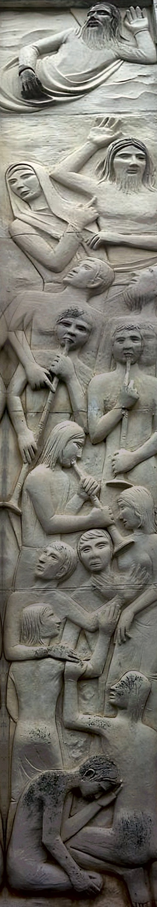

Bassorilievo · gessoBas-relief · plaster
La cappella, in rilievoThe chapel relief in 3D
Le tre parti del grande bassorilievo della cappella, ricomposte in un unico pannello. Trascinalo per girarci intorno e sposta la luce radente per far emergere le figure.The three sections of the large chapel relief, put back together as one panel. Drag to move around it, and move the raking light to bring the figures out.

Il bassorilievo della cappellaThe chapel relief">Caricamento del modello…Loading the model…
VistaView
Luce radenteRaking light
RilievoRelief
SuperficieSurface
Trascina per ruotare · tasto destro o due dita per spostare · rotella o pizzico per avvicinarti · doppio clic per girare intorno a un punto.Drag to rotate · right-drag or two fingers to pan · scroll or pinch to zoom · double-click to orbit a point.
Il modello è ricostruito a partire dalle fotografie: la profondità del rilievo è stimata dalle luci e dalle ombre, non misurata sull'opera. Le figure e i dettagli sono quelli delle fotografie.The model is reconstructed from photographs: the depth of the relief is estimated from light and shadow, not measured on the work. The figures and details are those in the photographs.